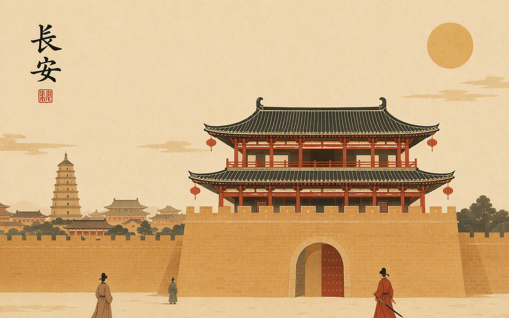
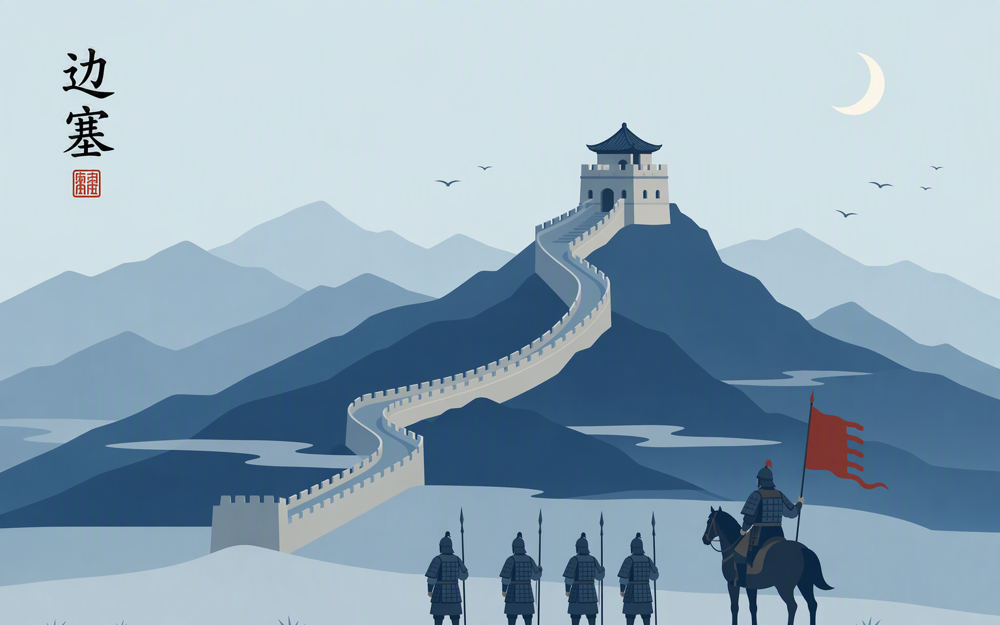

第二幕 · 地 ｜ 七十六处地点 · 自诗中拔峰而起
侠客在什么地方出现？峰愈高，诗中提及愈多——一眼可见，众山拱卫一京。
七十六处地点，一百八十八次提及。前十位占去半数有余；长安一城五十次，几抵榜上其余九处之和。条长即次数，差距不修饰。
点击任一条目，回到山河图上指认那座峰。
一边是功名的现实世界，一边是义气的想象空间。诗人在长安求仕、交游、写少年意气；把剑与功名未竟的孤愤，寄往塞外关山。

—
功名、交游、少年意气。九十首咏侠诗，半数绕不开这座城——侠客在这里是仕子、是少年、是市井里的快意人。

—
幽州、渔阳、玉门、楼兰——多数诗人未必亲至，却反复把侠义安放在这片想象的边疆：功名若不可得，便当死于边野。
功名在长安，义气在边塞。点击任一条目，回到山河图上指认那座峰。